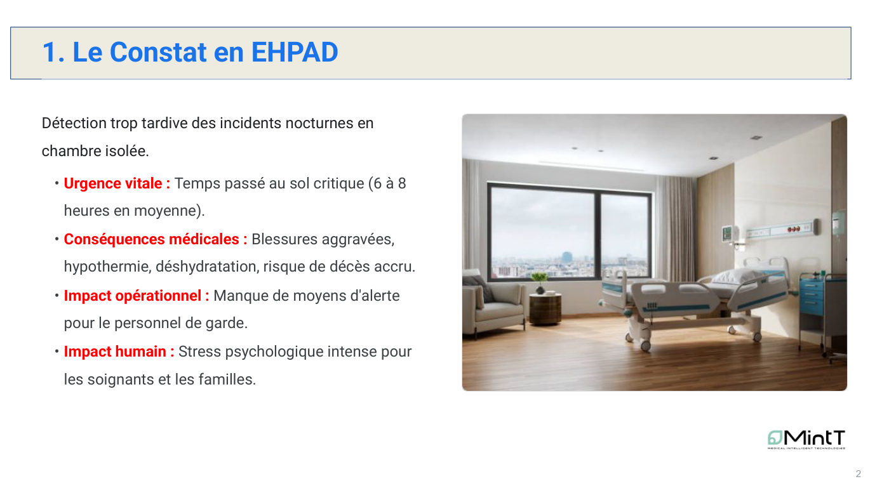
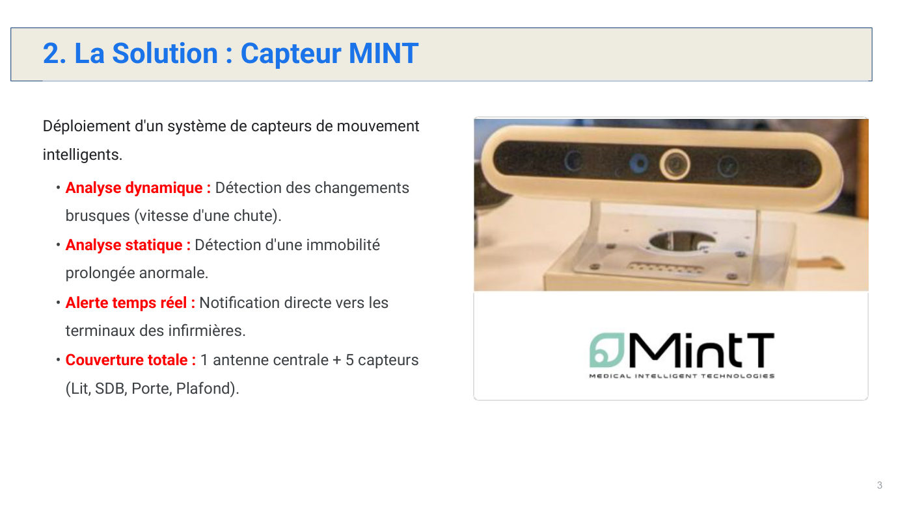
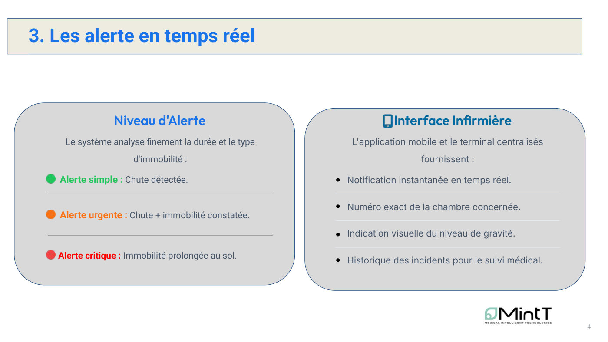
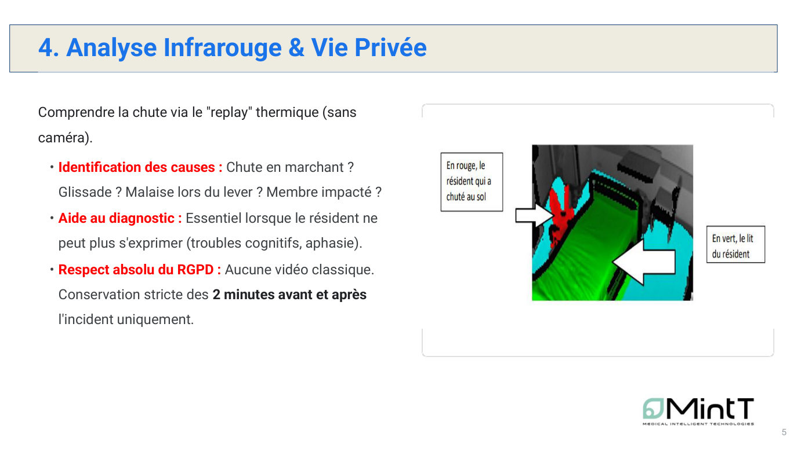
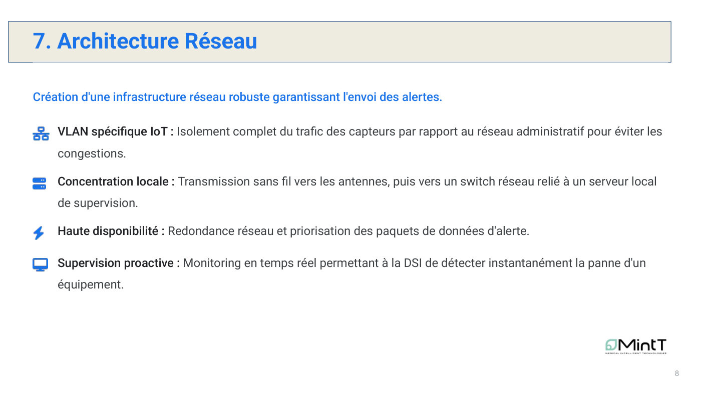
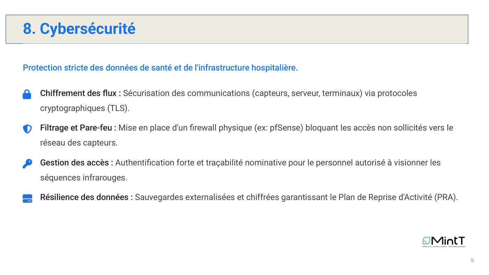
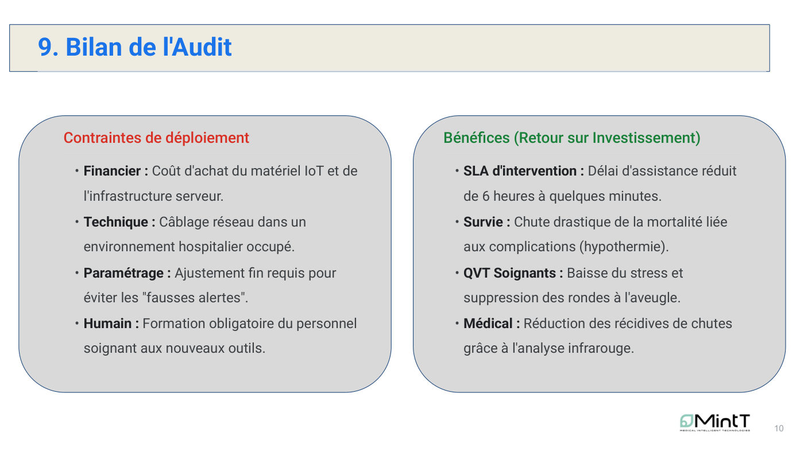

Sécurisation des chutes en EHPAD
Un projet pluridisciplinaire pour réduire le temps passé au sol par les résidents la nuit, en combinant capteurs, réseau et cybersécurité.
Équipe : Équipe de 3 : Imane ABDOU et Ethan PHILIPE (parcours ROM), Alexy SORRES (parcours Cybersécurité)

Contexte et objectif
Contexte
En EHPAD, les chutes nocturnes en chambre isolée sont détectées trop tard : 6 à 8 heures passées au sol en moyenne, avec blessures aggravées, hypothermie, déshydratation et un stress important pour les soignants et les familles.
Objectif
Proposer et auditer une solution de détection en temps réel (capteurs MINT) avec une infrastructure réseau fiable et une protection stricte des données de santé.
Ma mission
Mon rôle
Projet de groupe mêlant les parcours Réseaux opérateurs (ROM) et Cybersécurité. Nous avons étudié ensemble :
- Le constat et le besoin des équipes soignantes
- Le fonctionnement des capteurs, des niveaux d'alerte et de l'interface infirmière
- L'architecture réseau et la cybersécurité de la solution
- Le bilan contraintes / bénéfices du déploiement
Travaux réalisés
Constat
Analyse des conséquences médicales, opérationnelles et humaines d'une détection tardive.
Solution capteur MINT
Analyse dynamique (vitesse de chute) et statique (immobilité prolongée), alerte en temps réel vers les terminaux infirmiers.
Architecture en chambre
1 antenne centrale + 5 capteurs : plafond, près du lit, salle de bain, porte et capteur complémentaire.
Architecture réseau
VLAN IoT isolé, concentration locale vers un switch et un serveur de supervision, redondance et priorisation des alertes, monitoring par la DSI.
Cybersécurité et bilan
Chiffrement TLS, pare-feu pfSense, authentification forte, sauvegardes chiffrées (PRA), puis bilan contraintes / bénéfices.
Outils et technologies
Illustrations du projet
Images extraites du rapport. Cliquez pour agrandir.







Difficultés et solutions
Résultats obtenus
- Délai d'intervention visé : de 6 heures à quelques minutes
- Alertes graduées (simple, urgente, critique) avec numéro de chambre et historique
- Contraintes identifiées : coût, câblage en milieu occupé, réglage des fausses alertes, formation du personnel
Compétences développées
Compétences
- Analyse d'un besoin métier réel
- Conception d'une architecture réseau IoT sécurisée
- Prise en compte du RGPD
- Travail pluridisciplinaire (réseau, cybersécurité, santé)
- Présentation orale
Ce que ce projet m'a apporté
Ce projet m'a montré que le réseau est au service d'un enjeu humain : la fiabilité d'une alerte peut changer l'issue d'une chute.
Envie d'aller plus loin ?
Le document complet détaille toutes les configurations, mesures et analyses.